This is the first page of the system where system will choose destination depending on the function he/she possess in the company.
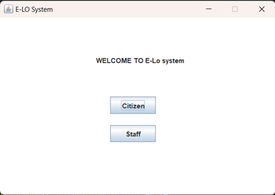From this form, 2 buttons login, citizen and staff are there with different directions and functions in the system but all having the same goal.
Citizen: this button is dedicated for system admin to login so that he/she can do more in the system, like adding employee or department and many more.
Staff: button dedicated to other system users to login and perform some tasks that they are allowed to do so depending on the task they hold in the company.
As we have described in above page citizen button will direct to this citizen login page.
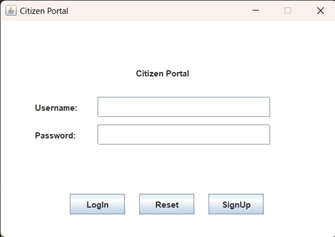Login Button: If clicked it will verify the credentials entered if it is corrected will be redirected to another respective form. If the credentials aren’t correct it will display the error.
Reset Button: It will remove characters in the textfields.
SignUp Button: if clicked will be redirected to another signup form:
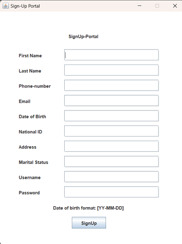After entering every thing needed and clicking the sign up button, it will register the new data into the database to be used later while logging in and anywhere else it may be needed.
Will be directed to the logged in form (the citizen’s portal):
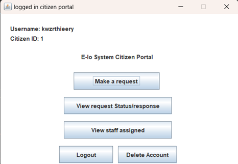Make a request: when this button is clicked it will provide a window allowing a citizen to make a request. On send, it will send the request in database to be sent to an appropriate staff member.
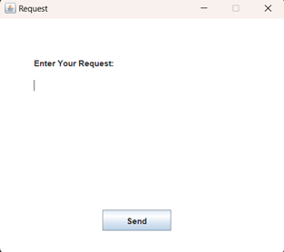View request Status/Response: when clicked it will display the form asking for a request id then show the status of the given request:
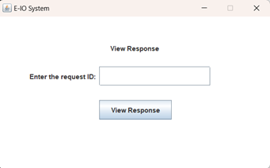 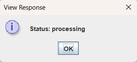View Staff Assigned: when clicked it will view the staff assigned to their request:
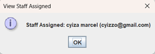Logout: when clicked it will logout and close the form.
Delete Account: it will prompt the user if he/she is sure if the user clicks yes then their corresponding account will be deleted from the database.
After clicking on Staff on the welcome page form you are directed to this form. Which prompt the user to enter the username and the password and then verify it against the data in the database.
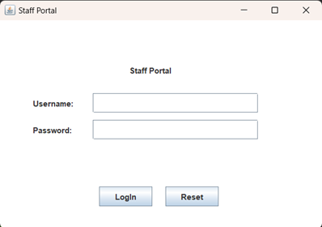Reset: This removes all characters in all textfields.
Login: When clicked it will verify the data entered it doesn’t match then it will say it. If it matches with the one in the database he/she will be directed to the staff logged in form (the staff portal).
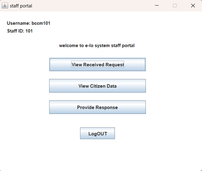View Received Request: When clicked on, it will view the requests received or assigned and or information regarding it. Including the date it was submitted, request ID, the request and the citizen id related to the citizen who submitted the request
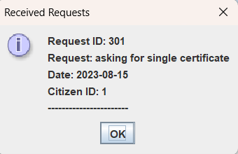View Citizen Data: when this button is clicked It will prompt the user to input the citizen id of the citizen you want to view information about. Then the system will use the citizen id to lookup and view data in the database.
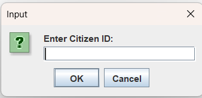 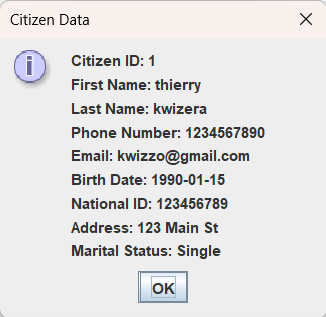Provide Response: When clicked it will ask the user to enter the request id of the request he/she want to provide a response for. Then provide a form with a textfield to enter the response. After entering the response and clicking the OK button, it will send the data to the database to be sent to the citizen.
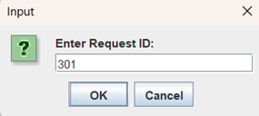 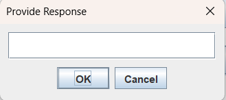Logout: When clicked it will log out the current staff and dispose all forms.